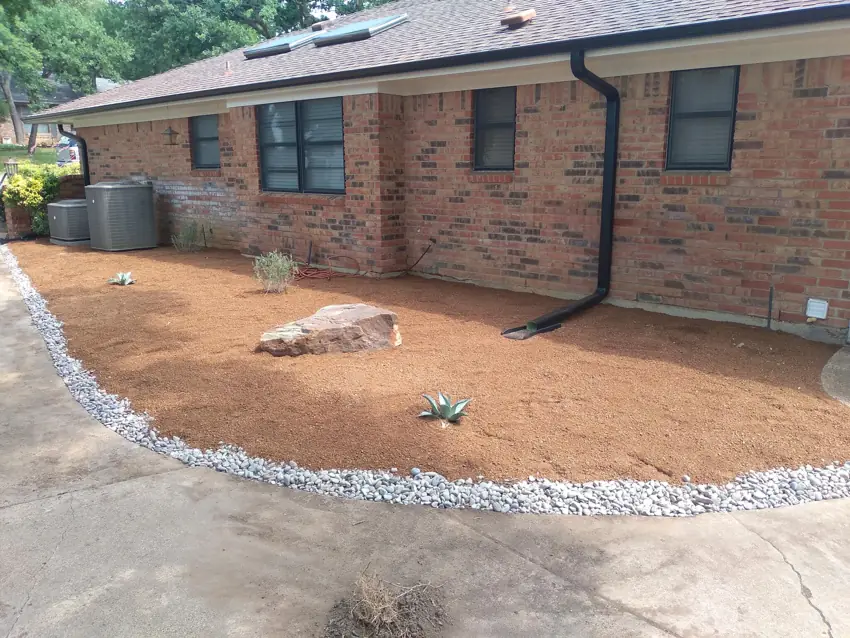
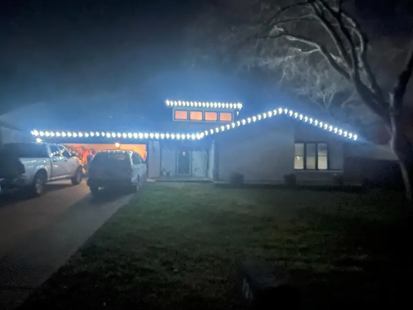
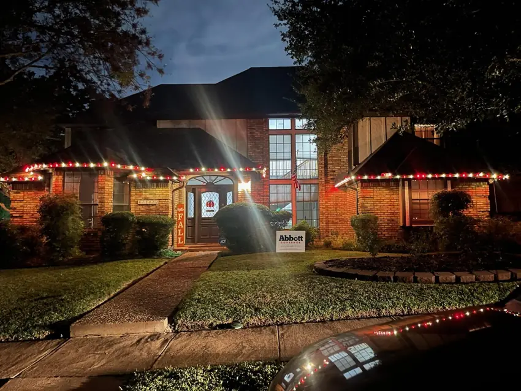

Lawn & beds
Ask about mowing, planting, sod, mulch or flower-bed cleanup.
Burleson, TX · Outdoor services
Landscape maintenance, sod, tree work and seasonal help in Burleson and the Arlington area.

Photo gallery
Landscaping photos shared by the business on its public profile.


Services
Ask about mowing, planting, sod, mulch or flower-bed cleanup.
Discuss trimming, pruning or removal for trees and shrubs on your property.
Ask about leaf cleanup, gutter cleaning or holiday lighting.
Burleson, Texas
Include your city, a quick description of the job and a photo if you have one.